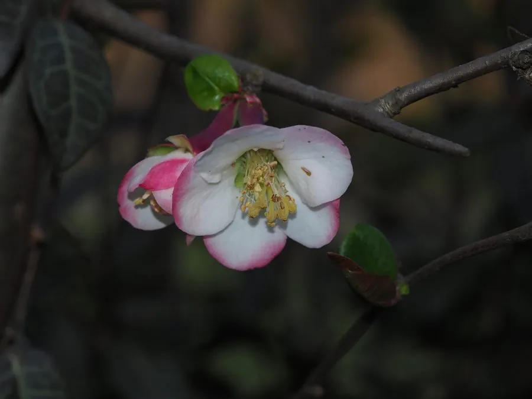

灌木与花木 · 植物界
木瓜海棠 Chaenomeles cathayensis

蔷薇科木瓜属落叶灌木，春季开粉红花，秋季结芳香坚硬的果实，花果兼赏，可入药，为中国特有树种。
- 分类
- 门被子植物门纲木兰纲目蔷薇目科蔷薇科属木瓜属
- 栖息环境
- 海拔 1000–2500 米的山地林缘、灌丛与沟谷，喜光耐寒耐旱
- 地理分布
- 中国陕西、甘肃、河南、湖北、四川、云南、贵州等地
- 保护级别
- 暂无评估；中国未列入国家重点保护野生植物名录
物种志
木瓜海棠为蔷薇科木瓜属落叶灌木或小乔木，高 2–6 米，枝条直立，具短刺。叶片互生，披针形至卵状披针形，边缘具锯齿。花 3–5 朵簇生，花瓣粉红色至淡红色，倒卵形，花期 3–4 月，先花后叶；果实卵形或长圆形，大型，长 10–15 厘米，成熟时黄色、芳香而坚硬，果期 9–10 月。
木瓜海棠原产中国陕西、甘肃、四川、云南、湖北等地，生于山地林缘与灌丛。它喜光、耐寒、耐旱，对土壤要求不严。果实富含果胶与有机酸，可制蜜饯、果酱，但质地坚硬、酸涩，不宜鲜食；果实入药称“光皮木瓜”，有舒筋活络、和胃化湿之效。春季繁花满枝，秋季金果芳香，是庭院中观花观果兼用的优良树种。
形态与习性
- 株高2–6 m，枝条直立、具短刺
- 花期3–4 月，先花后叶
- 果期9–10 月，果实大型、芳香坚硬
- 光照喜光，也耐半阴
- 水分耐旱，忌积水
- 土壤适应性强，以疏松壤土为好
- 主要用途庭院观花观果，果实入药、制蜜饯
趣味知识
- 木瓜海棠的果实坚硬芳香，过去常放在室内闻香。
- 它与热带水果番木瓜同名，但分属蔷薇科与番木瓜科。
- 果实入药称“光皮木瓜”，有舒筋活络之效。
- 春季先花后叶，满枝粉花，是北方庭院常见的早春花木。